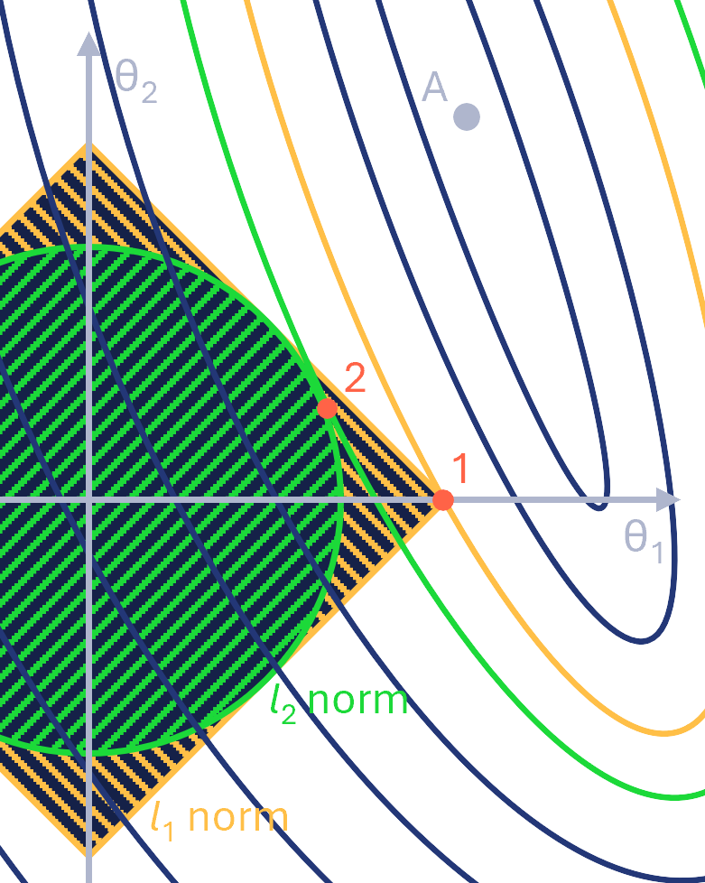

The Application of the L1 Norm to Lasso Regression
Least Absolute Shrinkage and Selection Operator regression (lasso regression) is a regularized linear model that restricts the coefficients (or weights) of a linear model.
It does this by adding the L1 norm (or 1-norm) of the weight vector to the cost function2. For a linear model with weight vector θ = (θ1, θ2, . . . θn)T, the cost function J(θ) takes the form
where MSE represents the mean squared error of the model and λ is a constant hyperparameter to scale the regularization (discussed more later)2.
Lasso regression has multiple uses in machine learning. One use is related to the problem of overfitting in linear models. Overfitting is the phenomenon by which an overly complex model is too sensitive with respect to the data used to train it and, as a result, does not generalize well to new data.
By constraining the values of the weights, lasso regression decreases the model's sensitivity to the variation in the training data, making overfitting more difficult and generalization to new data easier2.
Lasso regression is also useful at performing feature selection5.
Feature selection is the process of finding and eliminating the features (independent variables) in a given dataset that are not useful predictors of the response variable's behavior2.
As an example, consider a model predicting wave height using wind speed, wind direction, tide, and inflation index. Feature selection would likely find that inflation index is not a very good predictor of wave height and would eliminate it from the model.
Lasso regression automatically performs feature selection as it is fit to the data.
That is, the optimal fit using lasso regression can be a sparse model where the weights associated with features deemed unimportant can be decreased to exactly zero2.
While reducing the probability of overfitting is helpful, it is important to note that other regularized linear models also assist with reducing overfitting.
However, lasso regression's ability to perform automatic feature selection is rather unique.
Therefore, lasso regression is primarily important due to its unique ability to perform feature selection2.
This ability becomes especially useful in fields where high-dimensional datasets are common3.
That is, where the number of observations in a dataset is significantly less than the number of features (predictors).
In bioinformatics, it is likely that, due to cost and time constraints, the number of organisms that have been sequences is less than the number of genes whose expression data was recorded during each sequencing.
For example, information on the expression of 1000 genes may have been collected from only 20 mice.
Using its feature selection ability, lasso regression can eliminate the features that are not important and reduce the dimensionality of the dataset8.
Now that lasso regression and some of its applications have been introduced, the aspects of matrix theory that it relies on to both minimize overfitting and perform feature selection will be explained.
At the heart of lasso regression lies its defining feature: the L1 norm.
To fully appreciate lasso regression, the relation of the L1 norm to lasso regression must be understood.
As was stated in the introduction, lasso regression adds a constant multiple of the L1 norm of the weight vector to the cost function:
J(θ)=MSE(θ)+λ||θ||1.
Before understanding how this minimizes overfitting and promotes sparse solutions, the interpretation of the L1 norm of the weight vector and the effect that it has on the cost function must be explained.
Consider the intuitive interpretation of a vector norm as its "lenght"7">.
Due to the definition of the L1 norm:

linear models having weights of higher magnitude (that is, large absolute values), will have "longer" weight vectors than linear models with weights of lower magnitude.
Since the optimal weights θ1, θ2, . . . θn are those that minimize J(θ), the must minimize MSE(θ) + λ||θ||1.
Thus, a balance must be struck between minimizing the model's mean squared error and the magnitudes of the model's weights.
That is, we wish to minimize both the mean squared error and the length of the weight vector as much as possible.
The relative importance of minimizing ||θ||1 is determined by the value of the hyperparameter λ.
If λ = 0, only the mean squared error is considered and we find a solution identical to that provided by least squares regression.
As λ is increased, the minimization of ||θ||1 becomes more important (even at the cost of increasing the mean squared error).
Setting λ to an appropriate value is done on a case-by-case basis and will be demonstrated in a practical examples below using Python.
To understand how the L1 norm in lasso regression minimizes overfitting, the concepts of bias and variance must be explained.
Bias refers to the inherent difference between the model and reality.
Variance is the sensitivity of the model to the training data used to generate it.
By adding the L1 norm to the cost function, we artificially restrict the linear model's weights and thus increase the model's bias.
This simultaneously decreases the model's variance.
That is, it makes the model less sensitive to the training data.
Since the model is less sensitive to the training data, it is less likely to overfit4.
To see this concept in action, consider a trivially small set of data with only one independent variable and two points: (x1, y1) = (1, 2) and (x2, y2) = (2, 4).
By inspection, it is obvious that the best linear model is y = 2x (θ0 = 0, θ1 = 1). The best lasso mode (found using software), is:
If the data are "tweaked", so that (x2, y2) = (2, 3), the linear model obviously changes to y = 1 + x. However, the lasso model becomes:
Thus, the slope of the linear model was halved while the slope of the lasso model was cut to about 0.85 of its original value.
The intercept of the linear model also changes more than the intercept of the lasso model.
This example highlights the "insulative" effects of lasso regression on the model's weights with respect to variance in the training data (making overfitting more difficult).
Understanding why lasso regression has a propensity towards producing sparse models is less intuitive and is best explained by visually inspecting a comparison with ridge regression (which uses the L2 norm of the weight vector).
In the following explanation, refer to Figure 1.
Consider a model with two features corresponding to the weights θ1 and θ2.
Suppose the minimum for the unrestricted cost function occurs at point A.
Further, consider how the L1 and L2 norms restrict our selection of the weights θ1 and θ2.
For a given value of the L1 norm, our weights must fall within the blue "diamond" region.
Similarly, for a given value of the L2 norm, the weights must fall within the orange circular region.
Now, observe where the gray elliptical contours of the unrestricted cost function (around point A) first intersect these bounded regions.
In the case of the L1 norm, the first intersection with the contour occurs at point 1 on a vertex of the bounded region (which is also located on the θ1 axis).
The circular region corresponding to the L2 first intersects a contour (orange ellipse) at point 2, which is not on either axis.
Thus, the lasso regression solution, represented by point 1 is sparse (since θ2 = 0) while the ridge regression solution, point 2, is not sparse (θ1, θ1 ≠ 0).
Informally, lasso regression tends to produce sparse solutions due to the shape of the L1 norm on which is relies.
Since the convex vertices of the L1 norm extend the furthest from the origin (not as measured by the L1 norm, but in a conventional sense), it is more likely that the contours emanating from the unrestricted minimum will first encounter the L1 norm restricted region at a vertex.
As these vertices are positioned on the axes, intersection occurring at the vertices are also sparse.
The same cannot be said about the restricted region for the L2 norm as it is circular.
Thus, due to the unique shape of the L1 norm, it is more likely that optimal solutions using lasso regression will be sparse (as compared to unrestricted and ridge regression).
Of course, lasso regression solutions will not always be sparse nore are other types of regression unable to produce sparse solutions.
However, in general, lasso regression is more likely to return sparse solutions6.

Figure 1: Comparison of solutions with respect to the L1 and L1 norms. Created by author, inspired by6.
Having spend a significant amount of time discussing how the behavior of the L1 norm reduces overfitting and promotes sparse solutions in lasso regression, we conclude with a practical example.
Python (with the Scikit-Learn machine learning library) will be used to apply lasso regression to model the quality of red wine as a function of certain predictors.
The dataset in question records measures of fixed acidity, volatile acidity, citric acid content, residual sugar level, chloride level, free sulfur dioxide level, density, pH, sulphate level, and alcohol content for 1599 samples of red wine from Portugal1.
To save space, the matrix of predictors and vector of responses are already assigned to the variables X and y respectively (the process of loading the data is omitted).
Before applying lasso regression, the data are separated into training and testing sets.
The training set is used to determine the best weights, and the testing set is used to evaluate the optimized model.
Typically, as is done here, this is an 80/20 split.
The data are also scaled to ensure that all features are treated equally (no matter what range of values each predictor has).

As was mentioned earlier, the hyperparameter λ is selected on a case-by-case basis. Here Scikit-Learn's "GridSearchCV" feature is used to find the best value given a specified set.
Note that Scikit-Learn refers to this hyperparameter as "alpha" instead of λ.

Finally, we extract the lasso regression model with the best hyperparameter and use it to make predictions with the (previously untouched) testing set.

This final model has an r2 value of 0.38. Although not a desirable score, this is an improvement over the best-performing linear regression model with r2 = 0.36. Also, the lasso regression model did successfully produce a sparse model. The optimal weights for the lasso and least squares models are shown in Figure 2.
This indicates that the levels of citric acid, free sulfur dioxide, and the density are likely not important for the prediction of the wine quality (an insight that might have been missed if only least squares regression was used).
Having completed this example, the practical utility of the L1 norm in lasso regression for both minimizing overfitting and performing feature selection is clear and serves as one of the many instances of the applicability of linear algebra.
References
[1]
P. Cortez et al. "Modeling wine preferences by data mining from physico-chemical properties". In: Decis. Support Syst. 47 (2009), pp. 547-553. URL: https://api.semanticscholar.org/CorpusID:2996254.
[2]
Aurelien Geron. "Hands-on Machine Learning with Scikit-Learn, Keras & TensorFlow". In: O'Reilly, 2019. Chap 4.
M. Thamban Nair and Arindama Singh. Linear Algebra. Springer Singapore, 2018. p. 168. ISBN: 9789811309267.
[8]
Yuichi Okinaga et al. "Relationship between gene regulation network structure and prediction accuracy in high dimensional regression". In: Scientific reports 11.1 (2021), p. 11483.